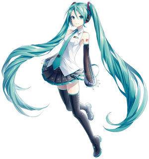

當您在發布文章時，若想要使用本地資源資源，例如放置在本地端的圖片，而不想要麻煩地上傳到雲端，如 Imgur ，就來看看如何建立 Hexo 資產資料夾並使用本地資源的介紹吧!
一樣分成三個步驟讓您快速上手:
第一步：設定配置文件來建立資產資料夾
資產 (Asset) 代表 source 資料夾中除了文章以外的所有檔案，例如圖片、CSS、JS檔案等。
Hexo 提供了一種方便管理 Asset 的設定： post_asset_folder，請打開 _config.yml 配置文件，並把 post_asset_folder 設定為 true：
|
|
當您開啟以上設定後，在建立新的 post 文章時 (Hexo new [layout] <title>)， Hexo 會自動建立一個與文章同名的資料夾，您可以把與該文章相關的所有資產都放到那個資料夾，如此一來，您便可以更方便的使用資產。
第二步：利用標籤插件來使用本地資源
Hexo 3 後新增了幾個標籤插件，讓您更方便的在文章內引用本地資源。
|
|
第三步：檢視與驗證
使用 asset_img 來引用本地圖片當作範例，首先您的 _post 資料夾下可能長這樣子：
|
|
那當我們在文章中輸入：
|
|
就會顯示：
![[初音未來]](/Blog/2017/04/10/建立-Hexo-資產資料夾使用本地資源/Miku.jpg "[初音未來]")
其他討論
若您的 Hexo 項目中只有少量的圖片，其實最簡單的方式就是將它們放在
source/images資料夾中，然後通過類似於的方法來訪問它們。
但缺點就是沒有組織化與不好管理。如果使用 Markdown 常規的語法
，雖然此圖會在文章中按你期待的方式工作，但他將 不會 出現在首頁上，而且可能會常有不能正確顯示的問題。 想要正確地引用圖片，是使用第二步中所介紹的標籤插件方式，圖片將會同時出現在文章、主頁和歸檔頁中。
這邊示範使用 Markdown 常規的語法：1 # 使用 小編的網頁反而會抓不到圖片
但首頁卻會顯示
![[首頁會抓不到初音未來的圖片]](/Blog/2017/04/10/建立-Hexo-資產資料夾使用本地資源/markdown_failLoadImg.PNG "[首頁會抓不到初音未來的圖片]")
有 其他網頁 介紹使用
hexo-asset-image的方式，假設您有點強迫症不能接受標籤插件的方式，想要使用 Markdown 常規的引用圖片語法，才需一試，不然現在版本的標籤插件已會正確地生成 html (官方的API才能確保後續的維護)。